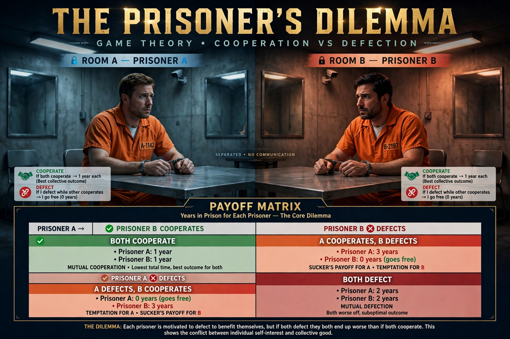

The prisoner's dilemma is a standard example of a game analysed in game theory that shows why two completely rational individuals might not cooperate, even if it appears that it is in their best interests to do so.
Two members of a criminal gang are arrested and imprisoned, each in solitary confinement with no means of communicating. Prosecutors offer each a bargain: betray the other (defect) or remain silent (cooperate). If both betray, each serves two years; if one betrays and the other stays silent, the betrayer goes free and the silent one serves three years; if both stay silent, each serves one year on a lesser charge.
| Cooperate | Defect | |
|---|---|---|
| Cooperate | −1, −1 | −3, 0 |
| Defect | 0, −3 | −2, −2 |
Defection is a dominant strategy for each player, so mutual defection is the unique Nash equilibrium — even though mutual cooperation would leave both better off. The dilemma was framed by Merrill Flood and Melvin Dresher in 1950 and named by Albert W. Tucker.
When the game is repeated, cooperative strategies such as tit for tat can thrive, as shown in Robert Axelrod's tournaments. Applications range from arms races and trade to climate negotiations and the evolution of cooperation.